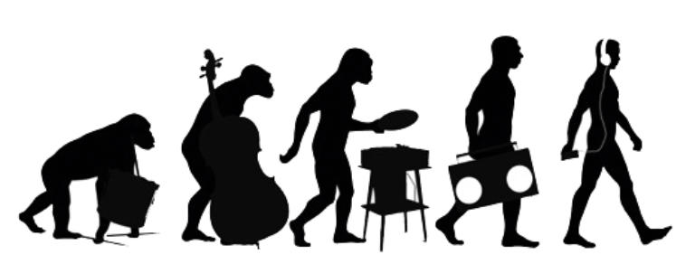

musivolución


Rata blaca festeja sus 30 años
La banda liderada por Walter Giardino cumple 3 décadas sobre los escenarios y lo festeja a lo grande, en el mítico estadio Luna Park (Madero 420 CABA) con producción de TM Eventos. En esta oportunidad presentarán un recital acompañados por una orquesta destacada de cuerdas. La cita será el 9 de agosto a las 21 horas, en donde la banda hará un repaso por sus hitos musicales, que tendrán los ingredientes excepcionales y llenos de matices de los arreglos orquestales.
Rata Blanca es una banda argentina de rock metálico fundada en Buenos Aires en 1987 por Walter Giardino. Es considerada la banda de rock/metal más importante de habla hispana, siendo también la más reconocida internacionalmente por el mundo anglo. Sus primeros álbumes marcaron un nuevo rumbo en la historia del rock en español convirtiéndose rápidamente en un artista multi platino alcanzando niveles de popularidad jamás imaginados para una banda del género. Magos, Espadas y Rosas es un álbum histórico con millones de copias vendidas en todo el mundo La leyenda del Hada y el Mago es actualmente una de las canciones más vistas en Youtube con más de diez millones de visitas y el tema Mujer Amante es considerada una de las mejores baladas todos los tiempos del rock internacional. Actualmente Rata Blanca sigue sumando logros y miles de fans son convocados a sus conciertos en todo el mundo. Sus nuevos discos están siempre entre los top five y dos de ellos han sido nominados para los premios Grammys. En menos de un mes desde su salida, su noveno disco de estudio, El Reino Olvidado llegó a ser el disco más vendido.
Hasta la fecha de hoy la banda ha sido consagrada con 12 discos de oro y 10 de platino, 3 doble platino haciéndolos la banda de hard rock argentino más exitosa a lo largo del tiempo. Su segundo álbum titulado "Magos, Espadas y Rosas" ha logrado vender más de 5 millones de copias mundialmente, el cual le abrió las fronteras a la banda, destacando no solo a nivel nacional sino también internacional.
La más reciente producción es “Tormenta Eléctrica” que continúa con la misma motivación y pasión por la música que en sus gloriosos comienzos. La fusión de su música los volvió conocidos en todo el mundo, destacando la combinación única de distintos como el rock, la música clásica y la música autóctona de Argentina.
RATA BLANCA es una de las bandas más grandes en su estilo: un sonido demoledor, contemporáneo combinado con composiciones inspiradas. Desde hace más de tres décadas, tiene asegurado su lugar como una de principales bandas del mundo anglo.


La Renga - Su historia
En enero de 1988, cinco chicos de Mataderos festejaban el año nuevo tocando covers de Creedence Clearwater Revival. Pocos meses después, ya bautizados como La Renga, ensayaban intensamente para las presentaciones en los clubes de barrio.
Chizzo (voz) terminó el servicio militar y de vuelta con Locura (guitarra), buscaron un bajista. Tete fue contactado junto con su hermano Tanque que participó, desde siempre en La Renga, en la batería. El Iglesias de los parches integraba una banda de metal, a la cual abandonó por las presiones que le causaban ambos ensayos junto con el trabajo.
En definitiva, La Renga es una banda de hard rock con influencias de blues. Fue formada el 31 de diciembre de 1988 y se destacó, siempre, por contar con una producción absolutamente independiente, luego de pasar unos cuantos años dentro del sello discográfico Universal.
En abril del '94, y sin más difusión que los cassettes piratas repartidos por ellos mismos entre los fans (el más importante fue "Esquivando charcos", incluso reeditado en 1998 por Polygram), el grupo se presentó en Stadium ante 2.500 personas.
El fenómeno se repitió al mes siguiente: 3 mil espectadores en la 9 de Julio recordaban a Wálter Bulacio (asesinado por la policía en un recital de Los Redondos) para escuchar a La Renga, Los Caballeros de la Quema y Los Piojos. Editaron, entonces, "A dónde me lleva la vida", el álbum debut, que no tuvo demasiada difusión.
Sin gozar de los privilegios de la exposición en los medios de comunicación y siendo reacios a conceder entrevistas, La Renga fue forjando su popularidad a través del boca a boca que llevaban a cabo los fanáticos.
Con el nombre de "Bailando en una pata", La Renga editó un álbum totalmente en vivo, integrado por viejas canciones y otros inéditos y registrado en las presentaciones de Obras Sanitarias a comienzos de 1995.
Regresaron para tocar en Obras, en noviembre de ese año, y enfrentaron una denuncia por apología del delito por su hit "Blues de Bolivia" que cita en su prosa a la cocaína y a la marihuana.
"Despedazado por mil partes" se editó en 1996, producido en colaboración con Ricardo Mollo. Fue presentado con cuatro recitales en Obras Sanitarias. Este nuevo trabajo fue el que produjo un gran crecimiento del público que siguió a la banda en cada fecha. Con este álbum llegó la primera gira por México y Estados Unidos, en 1997.
De ese trabajo discográfico se destacan cortes como "La balada del diablo y la muerte", "Cuando vendrán", "El final es en donde partí", "Desnudo para siempre (o despedazado por mil partes)", "A la carga mi rocanrol" y el clásico renguero que cierra todos los recitales: "Hablando de la libertad".
En octubre del '97 participaron del show en homenaje a los 20 años de las Madres de Plaza de Mayo, junto a León Gieco, Divididos, Las Pelotas, Los Piojos,Todos Tus Muertos, A.N.I.M.A.L., Attaque 77 y Actitud María Marta, entre otros.
Siempre del lado de la solidaridad, en 1998 también reclamaron por la educación en Argentina: el 1º de enero se presentaron en la Carpa de la Dignidad de los Docentes argentinos para colaborar con la causa.
La gira de 1998 los llevó por el resto de las provincias argentinas, y además por Uruguay y España. La Renga crecía a pasos agigantados. Ese mismo año editaron el disco de la estrella (por la gran estrella blanca en la tapa) o simplemente el álbum homónimo, que contenía el hit "El revelde".
La presentación del álbum se hizo con dos shows en el estadio de Atlanta (con Los Piojos como invitados), los cuales convocaron a 50 mil personas, además de mostrarlo en una serie de 22 recitales por las provincias argentinas.
En 1999, se produjo uno de los hitos más importantes de la banda: convocaron nada menos que 60 mil personas al estadio de Huracán.
Con el paso del tiempo, este grupo consiguió algo fuera de lo común en el negocio discográfico: logró imponerle a la compañía (Universal) sus propias reglas de juego, elevando el porcentaje de regalías del clásico 3% a alrededor del 20% por el álbum "La esquina del infinito", el único punto desafinado de La Renga. La firma de un contrato con un sello discográfico. Un material que vendió 40 mil copias.
En diversas oportunidades rechazaron propuestas para tocar en recitales gratuitos organizados por el Gobierno. Y también le dijeron no a sponsors relacionados con las bebidas alcohólicas que organizan festivales.
La historia de la banda y, sobretodo, el segundo show de Huracán (mayo del 2001) quedó registrado en la película "Insoportablemente vivo", estrenada en algunos cines no demasiado comerciales del país. El film fue dirigido por Diego Stokelj, también responsable de algunos videoclips. El lanzamiento fue acompañado por un disco doble, con dos temas inéditos ("Oportunidad oportuna" y "Un tiempo fuera de casa").
En noviembre del 2002 lograron un máximo pico en su carrera hasta ese momento: se presentaron en River Plate ante más de 70 mil personas. Junto con la entrada al show se vendió un EP con tres temas, llamado "Documento único".
La convocatoria de La Renga siguió en aumento. "Detonador de sueños" fue editado en el 2003 y presentado en el estadio Chateau Carreras de Córdoba. El 17 de abril de 2004 presentaron el disco otra vez en la cancha de River Plate.
El show del 4 de diciembre de 2004 fue registrado con 16 cámaras y editado en el DVD "En el ojo del Huracán", con las más de dos horas de show, el backstage, el montaje del escenario circular en el medio de la cancha y un libro de 96 páginas.
Luego de dos años de conciertos, "Truenotierra" fue lanzado a fines de 2006 con material totalmente inédito, grabado en los estudios propios y masterizado por Alvaro Villagra en Del Abasto. Dividido en dos discos, el primero contiene 12 tracks, entre ellos "Oscuro diamante". La segunda parte contiene cinco temas instrumentales. Fue estrenado a los pocos días (el 16 de diciembre), en el mundialista de Mar del Plata, ante 30 mil personas, bajo un temporal.
Durante el 2007, La Renga continuó con una gira por varias provincias y por España, Chile, Uruguay y Paraguay. La presentación en Capital Federal fue el 17 de noviembre, en el autódromo de Buenos Aires, ante unos 90 mil espectadores. Con esa entrada, la banda adjuntó, fiel a su estilo original, un DVD con cuatro videos.
Sumando conciertos a esta extensa trayectoria se presentaron en el Festival de la Huella Invisible que tuvo lugar el 24 de enero de 2009 en Santa María de Punilla (a unos 50 kilómetros de Córdoba capital), organizado por la propia banda. La excusa: comenzar los festejos por los 20 años de trayectoria. Formaron parte de la grilla: El Tri (México), Koma (España), Lovorne, MAD, Los Violadores, Los Gardelitos, Viticus y Edelmiro Molinari.
Si bien habían adelantado un par de temas en sus conciertos, la banda editó el siguiente disco recién a fines del 2010. "Algún rayo" salió en formato entrada-disco: con el CD se incluyó una entrada para alguna de las presentaciones programadas por todo el país.
En 2011, la banda emprendió una gira por toda Argentina y países vecinos presentando "Algún rayo". Durante el recital del 30 de abril en la ciudad de La Plata, Miguel Ramírez, un joven de 32 años, sufrió un impacto de una bengala en el lado derecho de su cuello y murió unos días después, el 9 de mayo. La banda decidió postergar la gira para "hallar en la reflexión el camino a seguir", dice en una parte el mensaje que el grupo transmitió, para finalmente retomar la actividad el 15 de octubre en Jesús María, provincia de Córdoba. La Renga reprogramó la gira con fechas en Uruguay, Chaco y Chile y finalizó esta serie de conciertos en abril de 2012 en Tucumán.
El 10 de diciembre de 2013 La Renga cerró los festejos por los 30 años de la Democracia en Argentina, en una jornada donde además participaron León Gieco y otros artistas. Como dato característico: fue la primera vez en toda su historia que La Renga permitió televisar en vivo uno de sus conciertos.
En diciembre de 2014 salió a la venta "Pesados vestigios" que fue grabado en la sala/estudio que la banda surgida en Mataderos tiene en Ezeiza.